Visual Gallery
Captured moments of wildlife and landscapes from paradise island
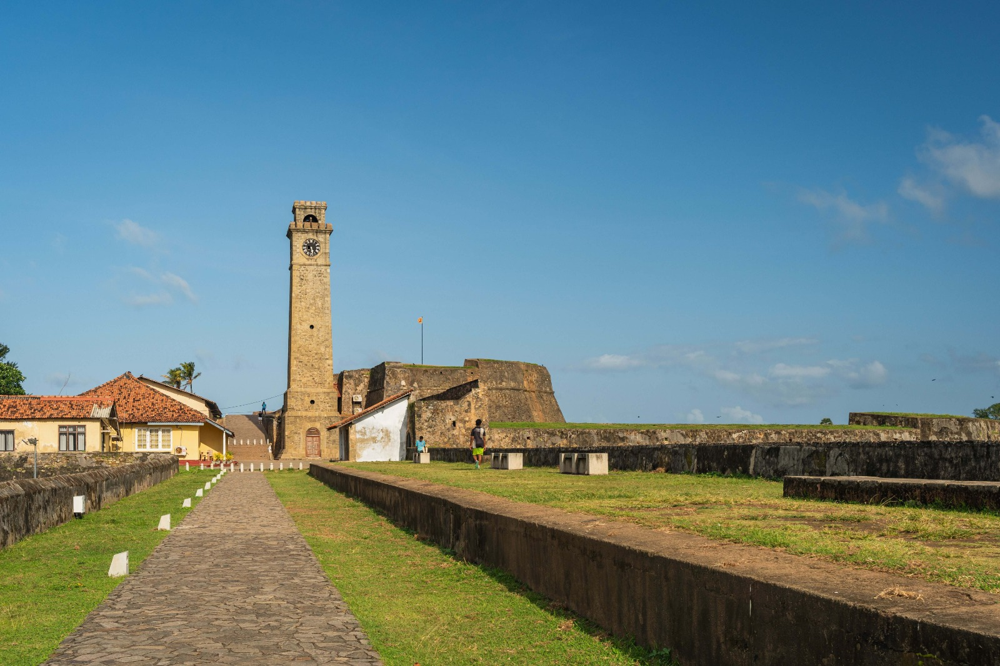
Galle Fort Lighthouse

Scenic Ella Gap View

Baby Elephant Playing
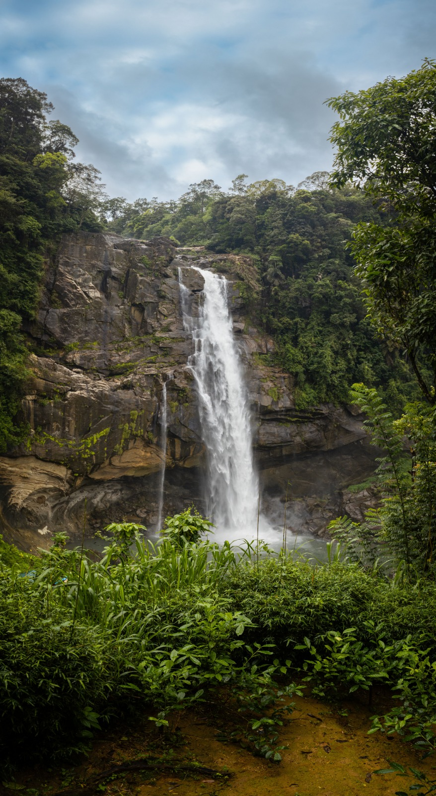
Bambarakanda Falls cascade
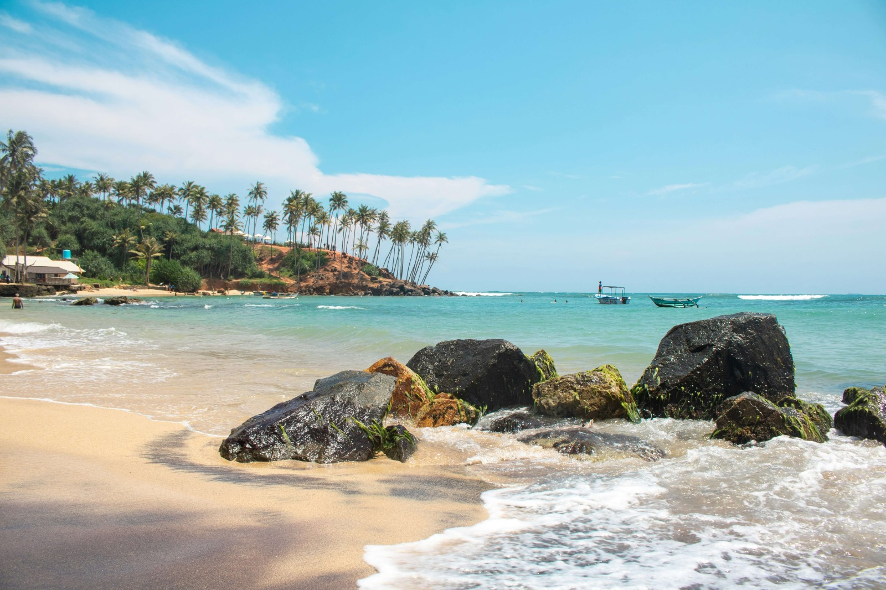
Sunrise over the hills

Leopard Resting in Yala
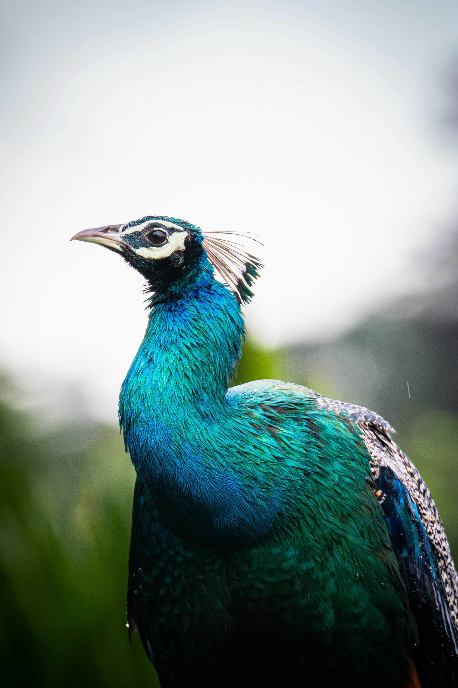
Wild Peacock Feather Display

Lush Tea Plantations
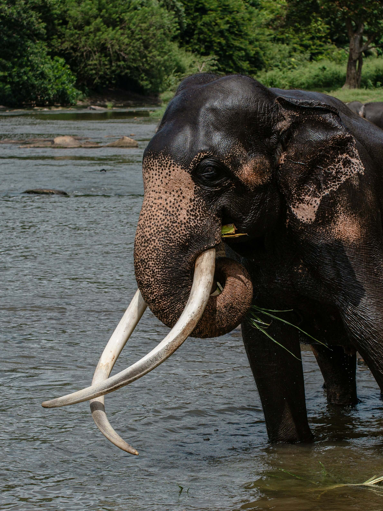
Majestic Tusker Elephant walking
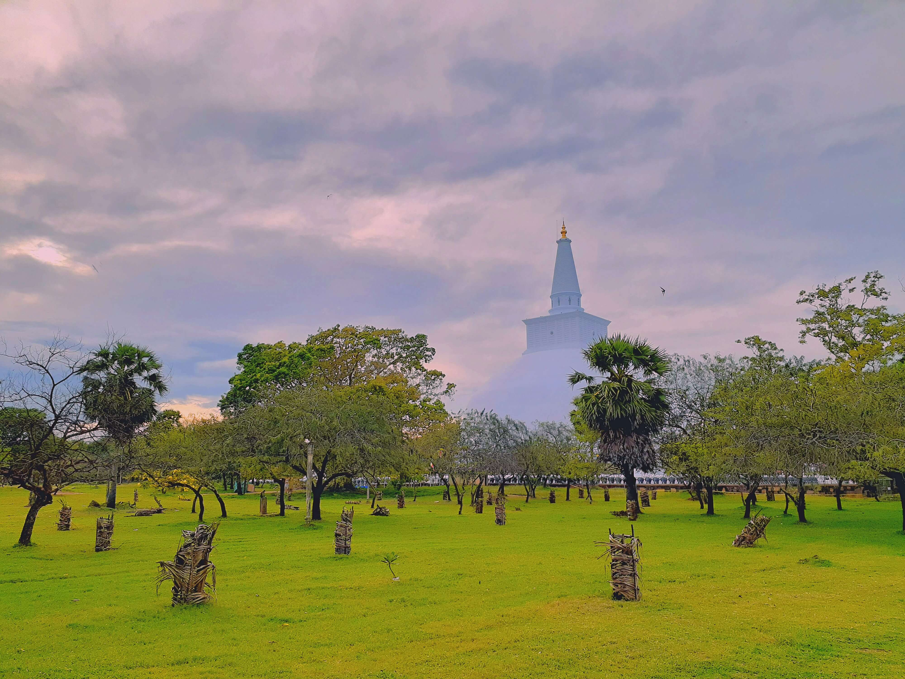
Ruwanweliseya Sacred Stupa
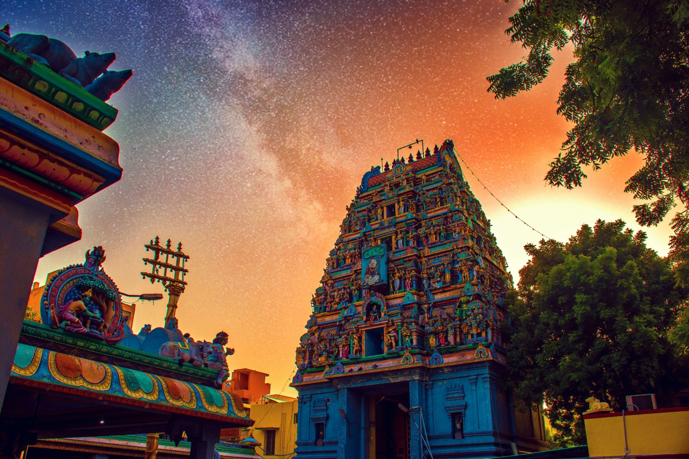
Munneswaram Hindu Kovil
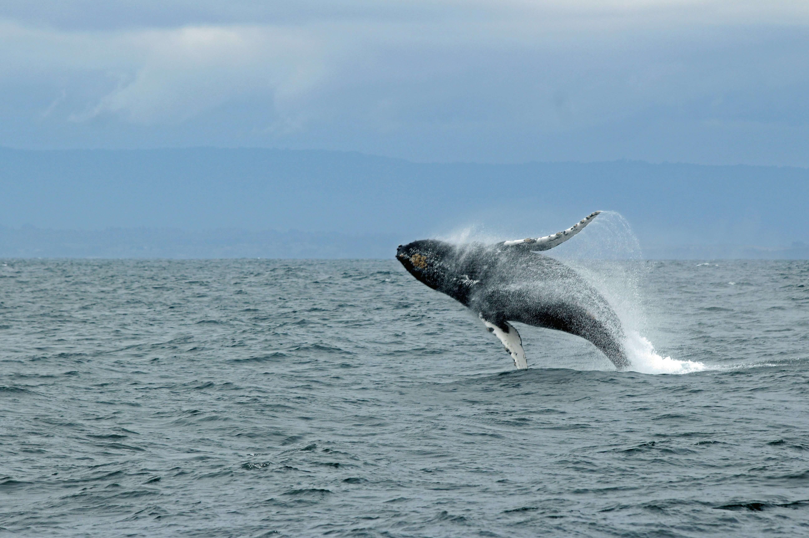
Whale tail fluke ocean splash

Sigiriya Lion Rock Fortress

Nine Arch Bridge Railway
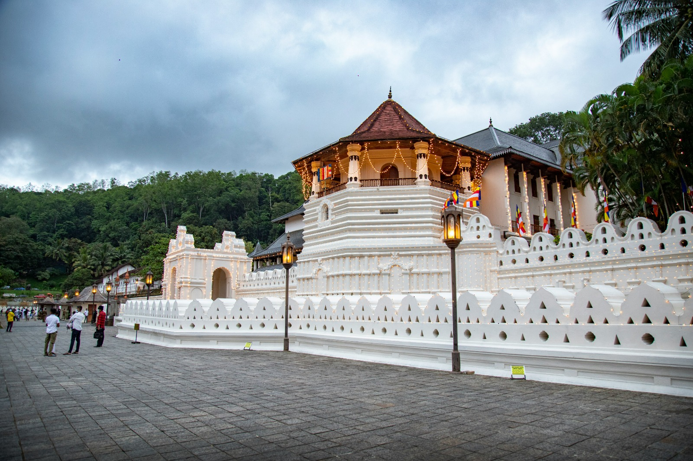
Temple of the Tooth Relic
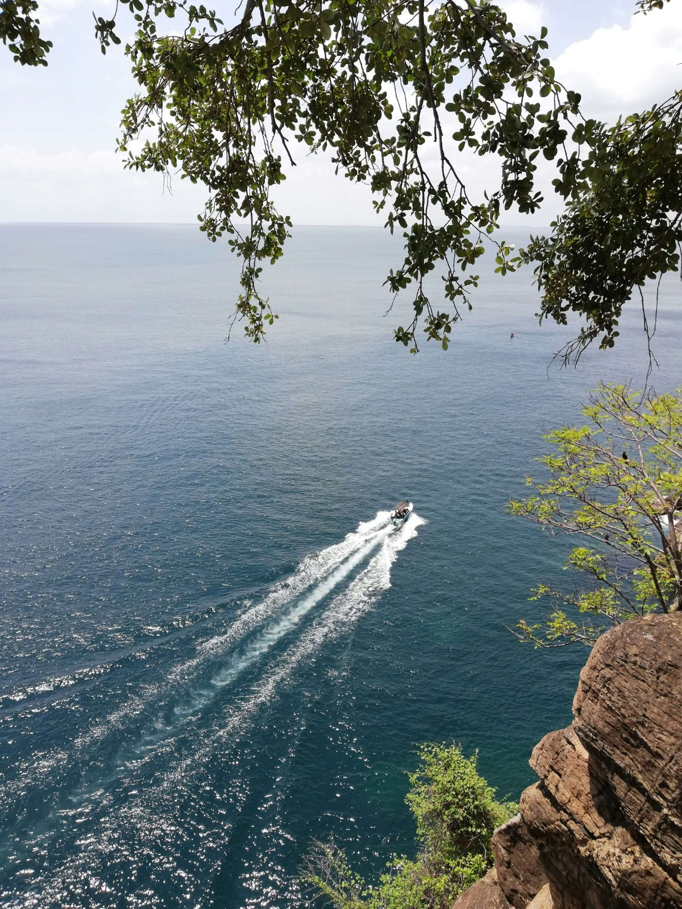
Nilaveli Beach Shoreline
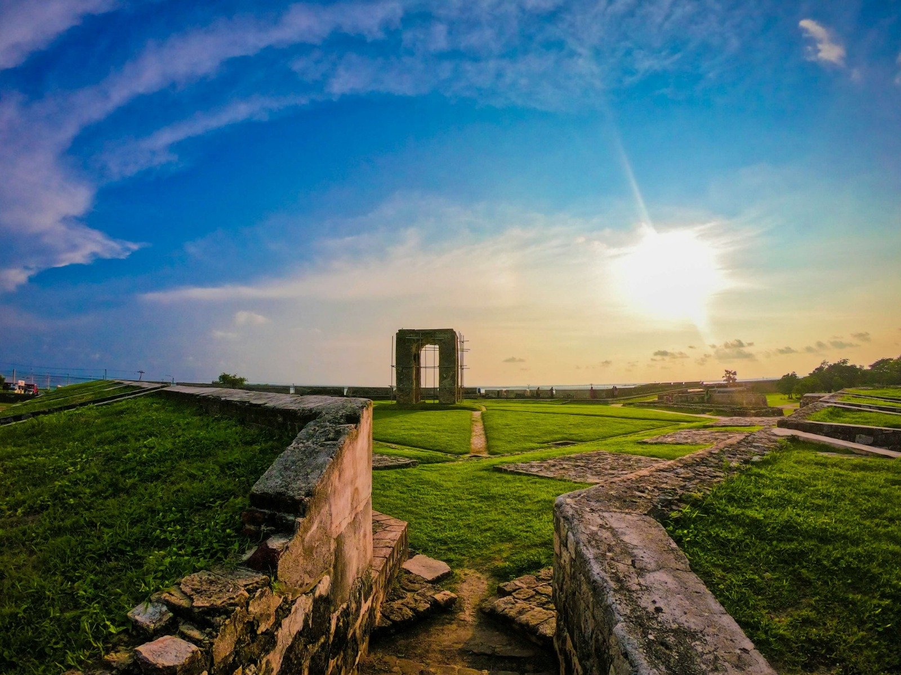
Nallur Kovil Temple Gopuram

Surfing Point at Arugam Bay
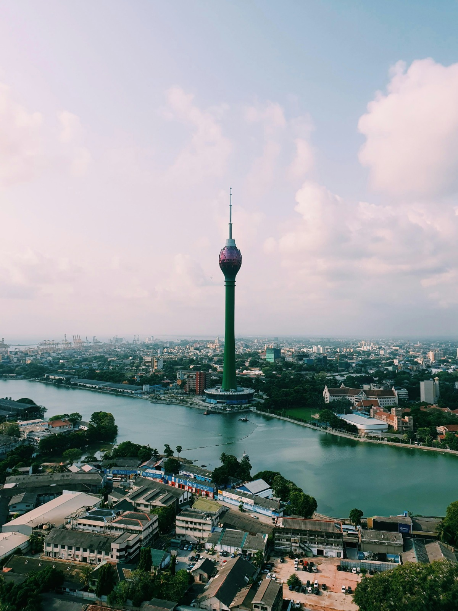
Colombo City Sunset
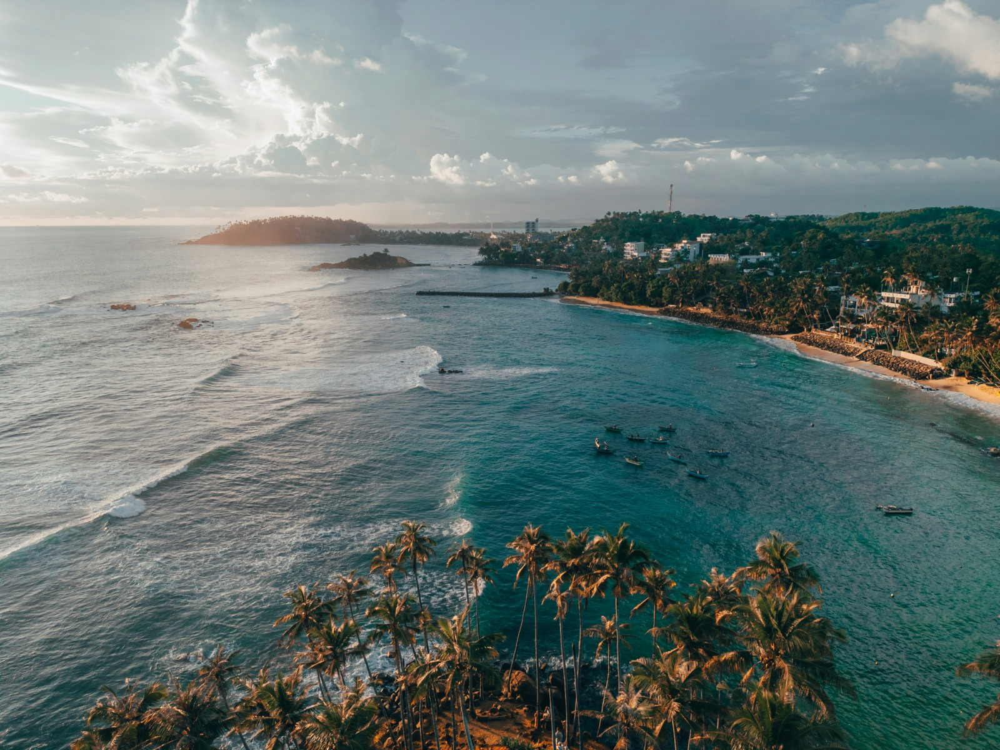
Pristine Sandy Beach
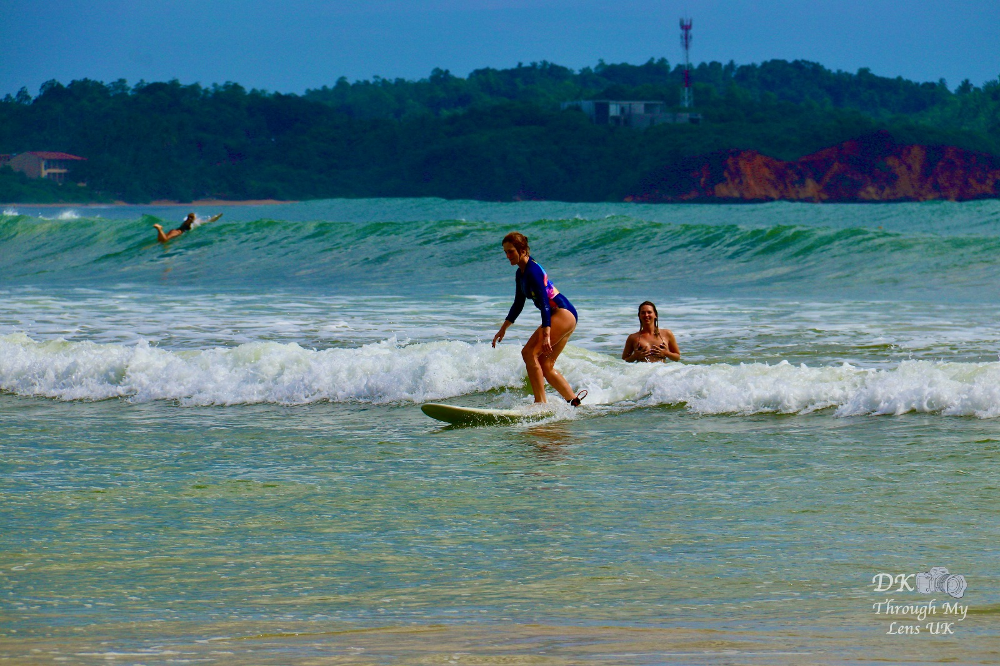
Surfing Point Break